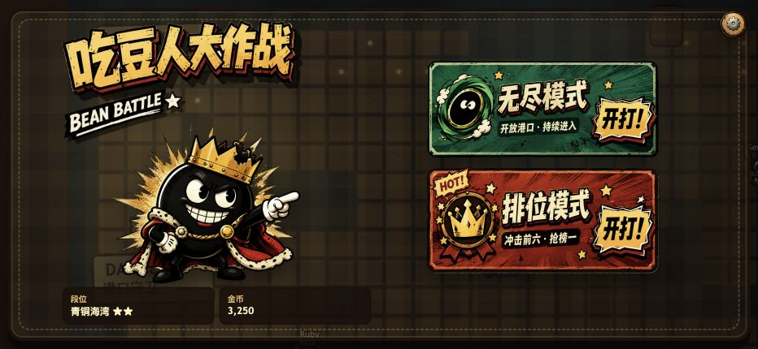
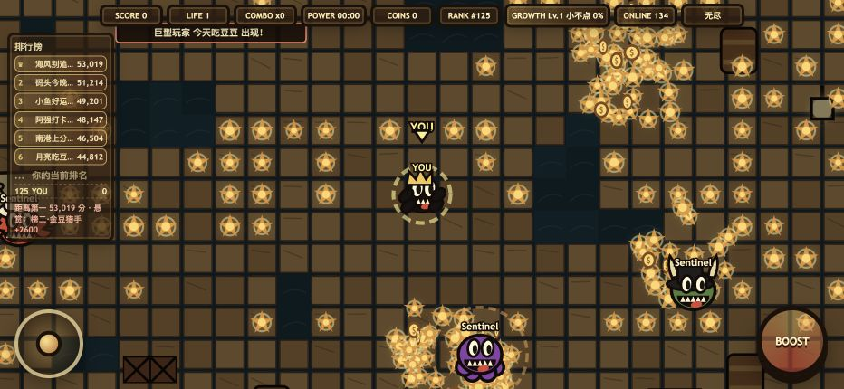

拇指操作不遮战场
左右控制布局可在设置中互换，兼顾不同握持习惯；桌面端同步支持键盘。
PLAYABLE PROTOTYPE · MOBILE LANDSCAPE
面向手机横屏的复古港口竞技原型。玩家从收集豆子开始，靠成长、道具和路线判断冲榜；排名越高，越容易成为 AI 猎手的目标。

建议使用手机横屏体验 · 桌面端支持方向键 / WASD 与空格键
PROTOTYPE CONFIG · 数据来自当前版本代码配置，不代表用户或商业结果
01 / OVERVIEW
传统吃豆的目标是清场；这个原型把目标改成动态排名。玩家需要在“继续发育”和“主动攻击”之间不断选择。
核心设计张力：你越强，拾取范围和战斗收益越高，但高分也会吸引更多猎手，安全路线随排名实时变化。

02 / CORE LOOP
玩法不是“吃得越多越好”的单线成长，而是一条持续升压的反馈回路：发育带来能力，也把玩家暴露给更强的追击。
豆子、金币与高价值资源点提供得分和成长。
体型、拾取范围与战斗收益随成长值提升。
能量豆与道具把追逐关系暂时反转。
排名上升带来更高目标价值和悬赏收益。
高分玩家触发更多 AI 猎手，迫使路线重新规划。
03 / PLAY EXPERIENCE
HUD 把高频判断放在画面上缘；排行榜保持在左侧；摇杆与 BOOST 分居两端，减少拇指遮挡中心战场。

左右控制布局可在设置中互换，兼顾不同握持习惯；桌面端同步支持键盘。
分数、生命、连击、能量、成长、在线人数与排名保持可见，避免战斗中断读。
守卫、精英 AI 和高分猎手不是静态障碍，而是会根据玩家状态切换目标的对手。
04 / MODES
无尽模式强调持续发育和生存；排位模式把时间压缩到 180 秒，让资源点、悬赏和击败时机更关键。

开放地图内长期积累，适合熟悉操作、道具和成长节奏。
有限时间放大路线效率、击败收益和最后阶段的风险判断。
05 / SYSTEM DESIGN
AI 每约 400ms 重算一次意图，在生存、争夺资源、伏击和发育之间选择。不同性格让场上压力不只来自速度差。
HUNTER
主动追击玩家和高分目标；拥有战斗资源时更倾向持续锁定。
FARMER
优先收集豆子和金币，靠稳定资源效率进入中后期竞争。
RAIDER
绕行获取能量豆或控制道具，再寻找伏击和反杀机会。
COWARD / ELITE
一类主动规避威胁，另一类制造高位排名压力，让战局保持层次。
06 / IMPLEMENTATION
没有框架和服务端依赖。当前版本聚焦横屏渲染、触控反馈、AI 决策、音效和本地进度，适合快速验证核心玩法。
摇杆、BOOST、WASD 与方向键
成长、道具、碰撞、排名与 AI 意图
迷宫、角色、资源、粒子与摄像机
程序化背景音乐和拾取、攻击音效
金币、段位、皮肤和操作设置
07 / PROTOTYPE BOUNDARY
VALIDATED IN BUILD
NEXT VALIDATION
READY PLAYER ONE